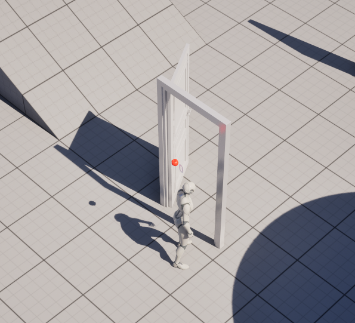
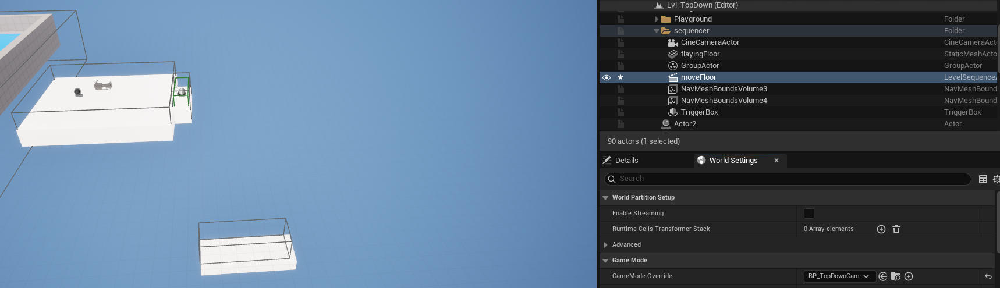
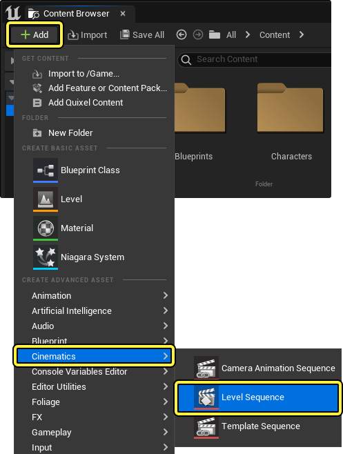
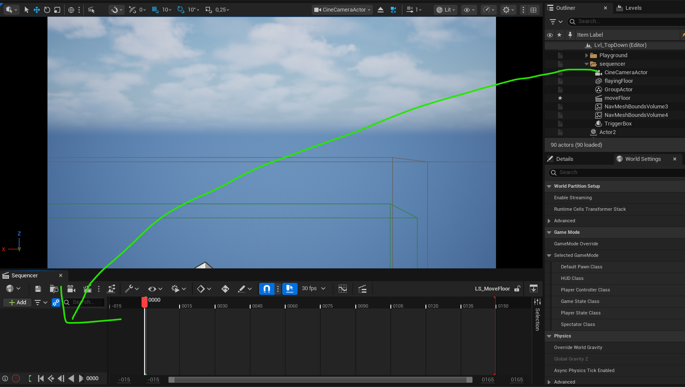
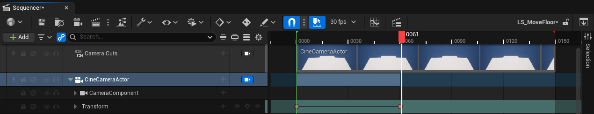
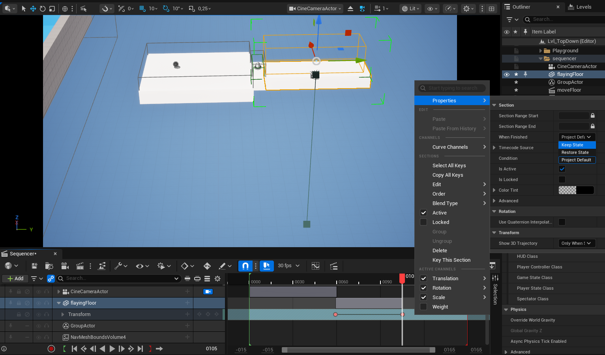

Unreal Engine - animacje
Na tych zajęciach zobaczymy, że animacja w grze to nie tylko bieganie postaci. Możemy poruszać drzwiami, kamerą, rekwizytami, a nawet uruchamiać krótkie scenki jak w filmie. Unreal Engine daje nam do tego kilka wygodnych narzędzi: Timeline, Sequencer i Animation Montage.
Poruszanie obiektów w czasie

W Blueprintach możemy użyć noda Timeline. To taki mały zegarek dla naszego Blueprinta:
odlicza czas i zwraca wartość, na przykład od 0 do 1. Dzięki temu obiekt nie musi
nagle przeskakiwać z miejsca na miejsce. Może poruszać się płynnie, elegancko i bez teatralnego „puff!”.
Przy drzwiach Timeline może powoli obracać skrzydło drzwi. Na początku wartość wynosi 0,
więc drzwi są zamknięte. Na końcu wartość wynosi 1, więc drzwi są otwarte. Blueprint w każdej
chwili animacji sprawdza aktualną wartość i ustawia odpowiedni obrót.
BP_Door
Najważniejszy pomysł jest prosty: Timeline mówi, jak daleko jesteśmy w animacji, a Blueprint wykorzystuje tę liczbę do zmiany obiektu. Możemy tak otwierać drzwi, przesuwać platformę, podnosić windę albo zrobić magiczną skrzynię, która otwiera się tak wolno, jakby chciała zbudować napięcie.
Cutscenki
Sequencer to narzędzie do tworzenia krótkich scenek filmowych w Unreal Engine. Działa trochę jak prosty program do montażu filmu: mamy oś czasu, kamery, obiekty i klatki kluczowe. Możemy ustawić, że kamera najpierw patrzy na drzwi, potem drzwi się otwierają, a na końcu w kadr wchodzi postać.
Cutscenka przydaje się, gdy chcemy pokazać ważny moment bez zostawiania wszystkiego graczowi. Na przykład: bohater znajduje tajne przejście, most powoli opada albo wielki przycisk robi bardzo poważne „klik”. Tak, przyciski też lubią mieć swoje pięć sekund sławy.
Jak zrobić prostą cutscenkę
-
Na początku mamy na scenie podłogę do przemieszczenia (
flayingFloor), kamerę (CineCameraActor) i wyzwalacz, który zareaguje na kolizję (triggerBox).
-
W Content Browserze klikamy prawym przyciskiem i wybieramy Cinematics > Level Sequence.
Dodajemy go na scenę.

- Otwieramy utworzony plik.
-
Dodajemy kamerę albo przeciągamy do Sequencera obiekt ze sceny, na przykład podłogę.

- Ustawiamy znacznik czasu na początku i dodajemy pierwszy keyframe.
-
Przesuwamy znacznik czasu dalej, zmieniamy pozycję kamery lub obrót obiektu i dodajemy drugi keyframe.

- Klikamy Play i sprawdzamy, czy ruch wygląda dobrze.
-
Jeśli chcesz, by obiekt został na miejscu po animacji, kliknij prawym przyciskiem na oś czasu animacji
konkretnego aktora: Properties > When Finished > Keep State.

Level Blueprint
Uruchomienie animacji akcji
Postać w Unreal Engine często składa się z dwóch ważnych części: modelu i szkieletu. Model to widoczna postać, czyli jej wygląd. Szkielet to ukryte kości, które pozwalają poruszać rękami, nogami, głową i innymi częściami ciała.
Animacja to zapis ruchu szkieletu. Może mówić: „podnieś rękę”, „zrób krok”, „machnij mieczem” albo „pomachaj do gracza”. Gdy odtwarzamy animację, Unreal porusza kośćmi postaci zgodnie z przygotowanym ruchem.
Animation Montage to specjalny sposób uruchamiania animacji akcji. Przydaje się wtedy, gdy animacja ma wystartować w konkretnym momencie gry, na przykład po kliknięciu przycisku, wejściu w trigger albo podniesieniu przedmiotu. Montage możemy traktować jak krótką playlistę ruchów dla postaci.
BP_PushBox
Quiz
1. Do czego służy Timeline w Blueprintach?
2. Do czego przy otwieraniu drzwi przydaje się node Lerp?
3. Czym jest Sequencer?
4. Co zapisujemy za pomocą keyframe w cutscence?
5. Kiedy warto użyć ustawienia Keep State?
6. Kiedy korzystamy z Level Blueprint?
7. Czym jest animacja postaci?
8. Do czego przydaje się Animation Montage?
Zadanie dla chętnych
Stwórz ciasne przejście, przez które może przeciskać się gracz. Gdy gracz nim przejdzie, niech przejście się zawali, blokując drogę powrotną.
 Jak twórcy gier oszukują w animacjach
Jak twórcy gier oszukują w animacjach
 Jak płynie czas w grze wideo?
Jak płynie czas w grze wideo?